antennas/antennae
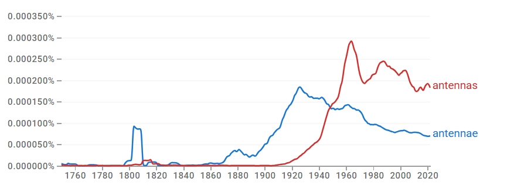
결론
antennae와 antennas는 동일한 형태에서 출발했으나, 생물학적 전문 용어와 기술·공학적 일반 용어라는 서로 다른 방향으로 분화되었다. antennae는 곤충학·생물학의 전문 용어로 제한되는 반면, antennas는 무선 통신·가전·우주 통신과 결합하며 현대 영어의 기술적 표준 복수형으로 자리 잡았다. 즉 고전형과 규칙형이 단순히 경쟁하는 데 그치지 않고 의미·사용 영역의 분화를 통해 장기 공존하는 사례로, 규칙형 우세 → 우세 전환 → 의미 분화에 속한다.
연구 결과
과정 및 결론 도달 과정 · 사용 도구
1차 Ngram 사용량 그래프로 초기 우세 형태(고전형)와 역전 시점을, 2차 같은 그래프로 역전을 동반한 우세 전환 경로를 읽었다. 3차는 Ngram 형용사·명사 연어(생물학 vs 통신공학)와 COCA 맥락 분석으로 두 형태가 서로 다른 의미 영역에 배분되었음을 확인했다.
세부 정보 · 구간 별 분절
초기에는 고전형 antennae가 상대적으로 우세하며 19세기 후반~20세기 초반까지 상승한다. 규칙형 antennas는 20세기 초까지 매우 낮은 수준에 머물다 1930년대 이후 급증하여 1950년대 전후 antennae를 추월한다. 이후 사용량의 중심은 규칙형 antennas 쪽으로 뚜렷하게 기울어진다.
일시적 변동이 아니라, 일정 기간 병행 사용을 거친 뒤 규칙형이 상대적 우위를 점하는 방향으로 전개된 우세 전환의 경로다.
antennae는 long, male, female, segmented 및 insect/filiform antennae와 결합해 곤충학·형태학·생물 분류학과 연결되고, antennas는 directional, multiple, parabolic 및 array/microstrip/dipole antennas와 결합해 통신·전자공학과 결부된다. COCA에서도 antennae는 생물학적 기관과 그 은유적 확장(political/emotional antennae)에 남고, antennas는 통신·공학 장비의 기술적 표준형으로 확장된다. radio/radar antennae 같은 기술적 잔존 용례가 일부 확인되므로 완전 분리라기보다, 역사적 중첩을 거친 뒤 현대에 들어 고전형=생물학, 규칙형=공학으로 배분된 의미 분화다.
antennae는 곤충·갑각류의 더듬이를 가리키는 생물학 용어로 정착하며 그 형태가 유지된 반면, 통신 장치를 가리키는 기술적 의미가 확장되면서 규칙형 antennas가 채택되었다.
참조 이미지
연어 그래프 · COCA 맥락 캡처 펼치기
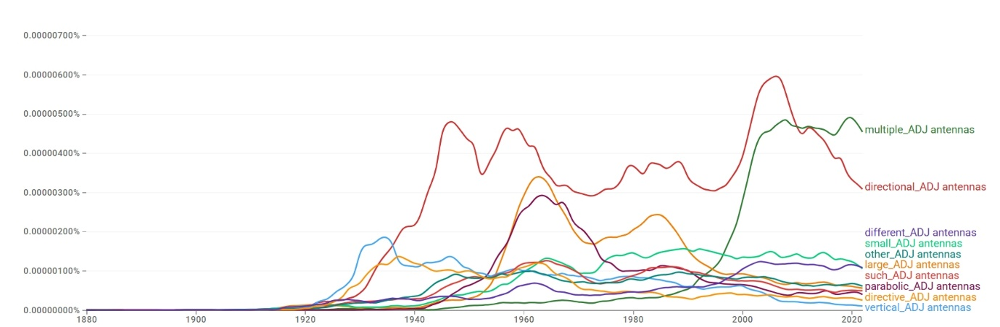
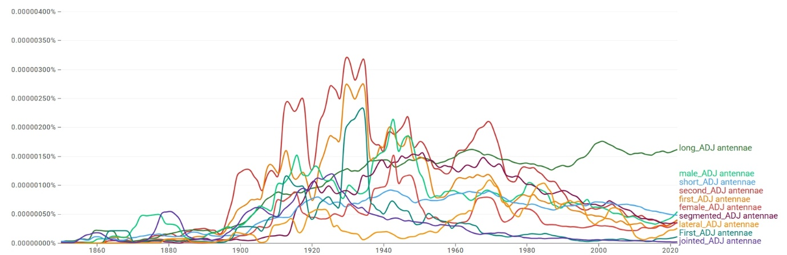
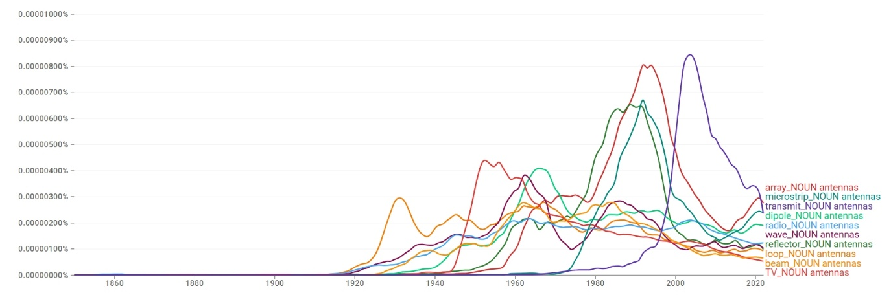
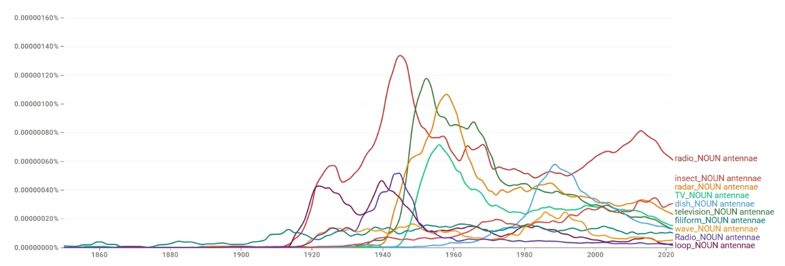
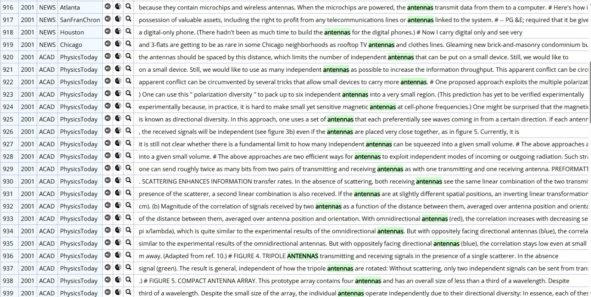
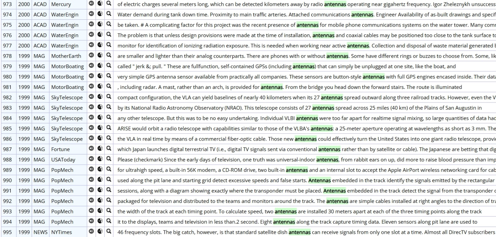
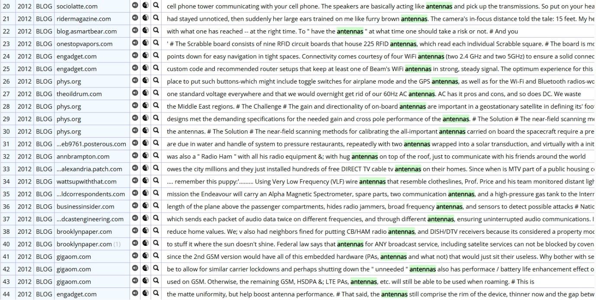
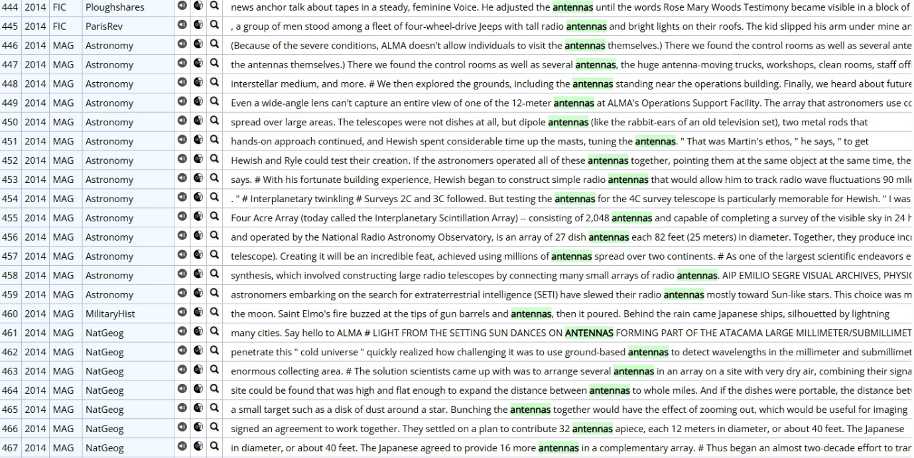
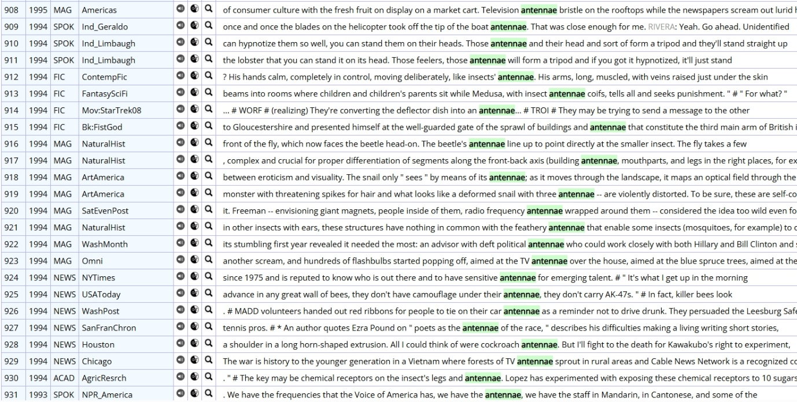
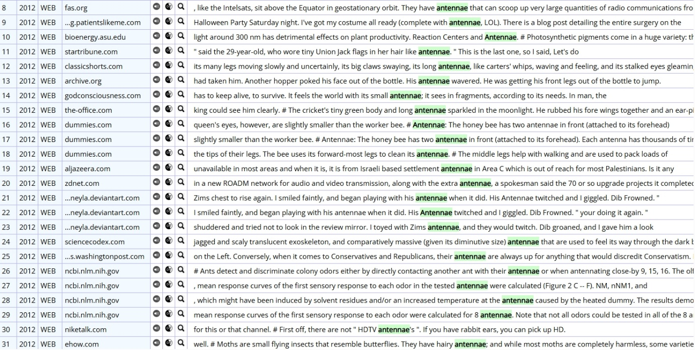
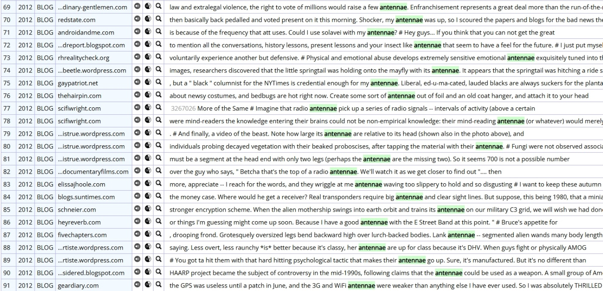
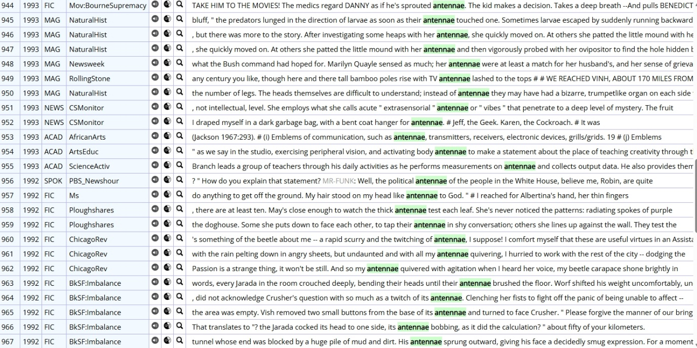